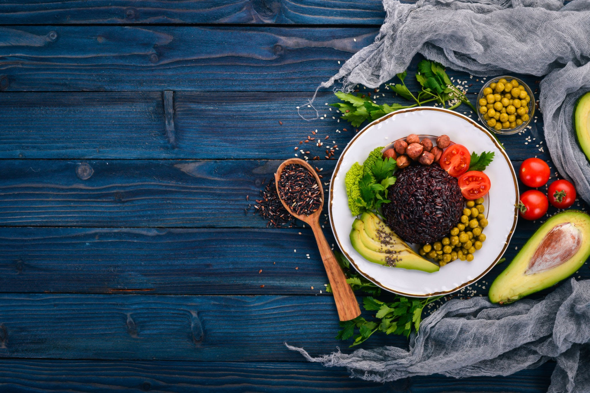

Контроль энергетического баланса
Инструменты экспресс-анализа физических параметров и оптимизации макронутриентов.

Текущие биометрические данные
178
Рост, см
75
Вес, кг
16.8%
Жир
Оптимальные источники белка
| Продукт | Белки / 100г | Калории |
|---|---|---|
| Куриное филе (отварное) | 30 г | 150 ккал |
| Творог обезжиренный | 18 г | 90 ккал |
| Горбуша запеченная | 22 г | 140 ккал |